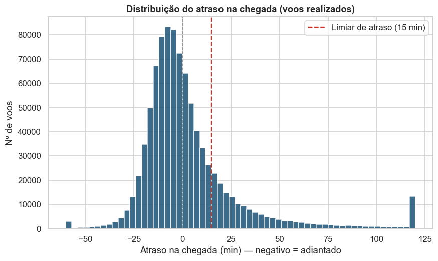
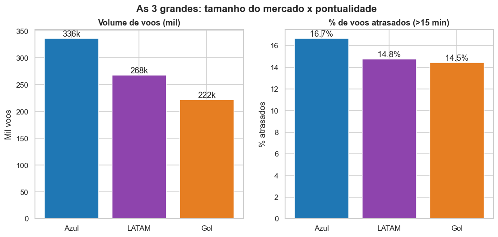
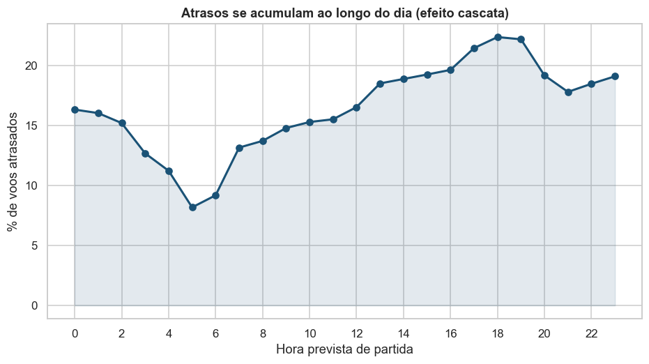
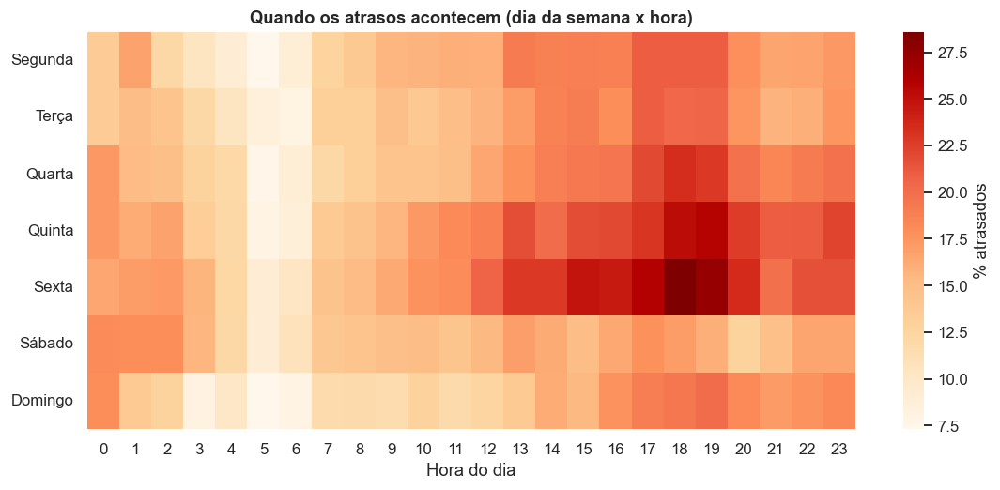
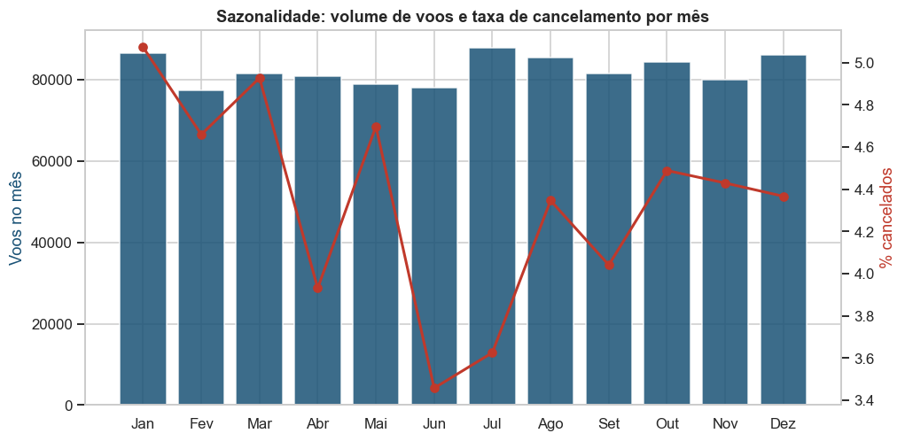
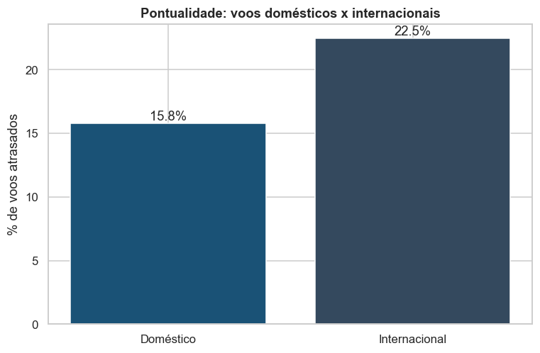
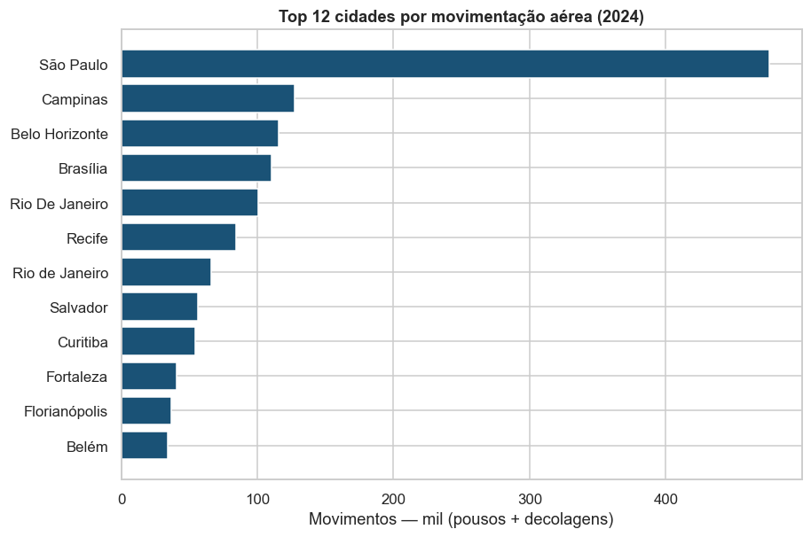
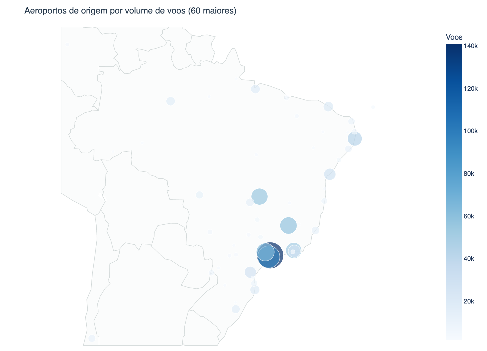
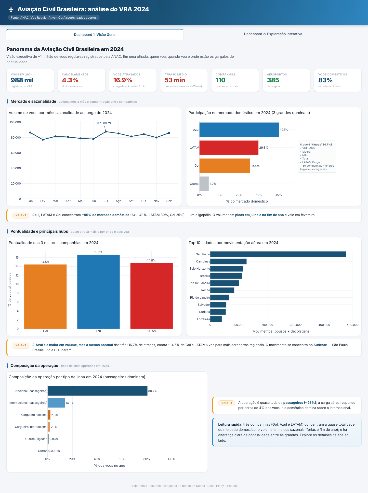
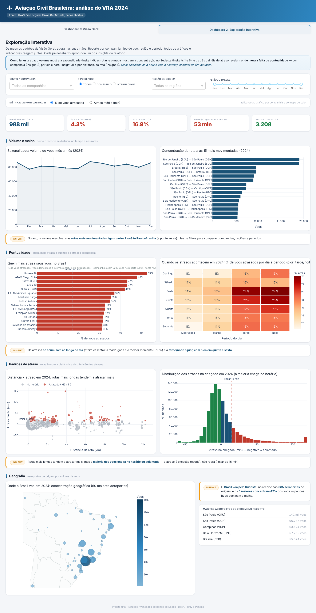

| Fonte | Arquivos | Papel no modelo | Registros |
|---|---|---|---|
| VRA (ANAC) sistemas.anac.gov.br |
12 CSV mensais | Tabela-fato (cada voo) | ~988 mil |
| OurAirports | airports.csv | Dimensão de aeroportos (cidade, UF, região, lat/lon) | ~80 mil |
| Companhias ANAC / OpenFlights |
dim_companhias.csv | Dimensão de companhias (nome, país, grupo) | 62 |
src/.
sep=";", pulando a linha de metadado "Atualizado em:").src/crawler.py) baixa sozinho os 12 meses + aeroportos, direto da ANAC, sem login.Coluna Código Justificativa estava 100% vazia → removida.
Voos realizados sem horário previsto → mantidos usando a partida real como referência.
Atrasos absurdos (> 12 h, erro de fuso) → tratados como nulos. Duplicatas removidas. Período restrito a 2024.
Datas → datetime ISO8601 (corrige segundos fracionados que falhavam).
Códigos ICAO em maiúsculo; situação do voo uniformizada.
atraso_chegada_min, atrasado (> 15 min),
cancelado, rota, distancia_km (fórmula de Haversine),
recortes temporais (mês, dia da semana, hora, período).data/processed/voos.parquet.









